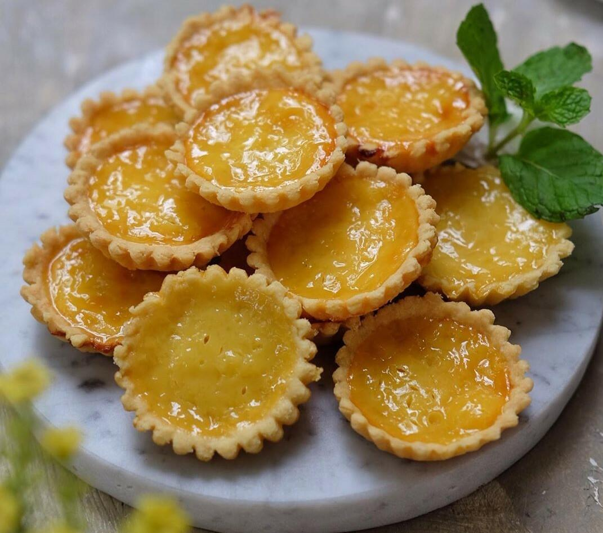

Indonesia
Pie Susu Bali

Description
A well-known souvenir from Bali. Now you can recreate those delicious lovely tarts in your own kitchen.
Ingredients
Crust
- 250 gram all purpose flour
- 125 gram butter, chilled and cut to small 1/2 inch cubes
- 1 tablespoon sugar
Custard
- 3 egg yolks
- 1/2 can (200 gram) sweet condensed milk
- 100 ml water
Steps
Crust
- In a mixing bowl, add flour, butter and sugar. Use a pastry cutter, or 2 butter knifes, or just your hands, mix these ingredients until it forms a ball. This dough ball won't be sticky, just barely holding together, but that is fine.
- Transfer the dough ball to tart pan, press evenly all around the edges and the bottom of the tart pan. Use your fingers to make sure the dough is spread evenly over the pan. Prick lightly with a fork. Set aside.
Custard
- Whisk together all custard ingredients.
- Pass through a strainer to get a smooth texture.
- Pour the strained custard into the tart shell.
Baking
- Preheat oven to 325 Fahrenheit, bake the tart in the middle of the oven until the crust is golden brown and the custard is set, about 30 to 35 minutes.
Film Pairings